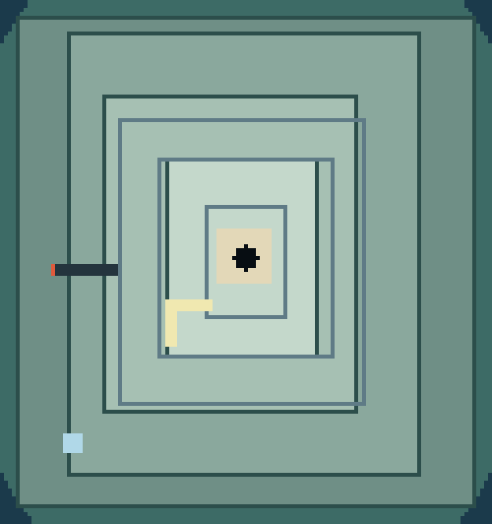
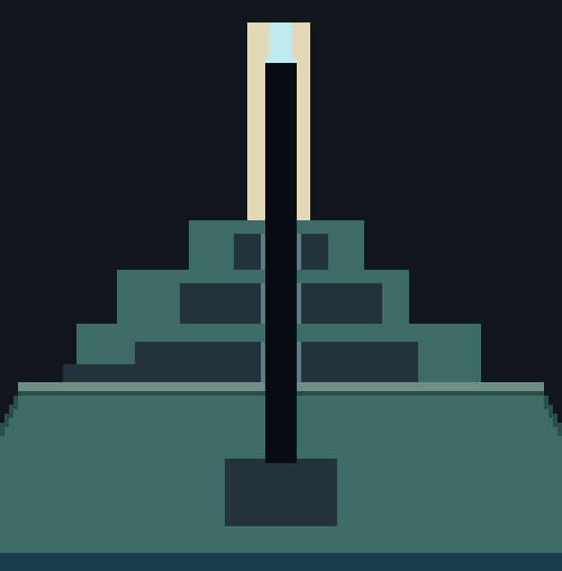
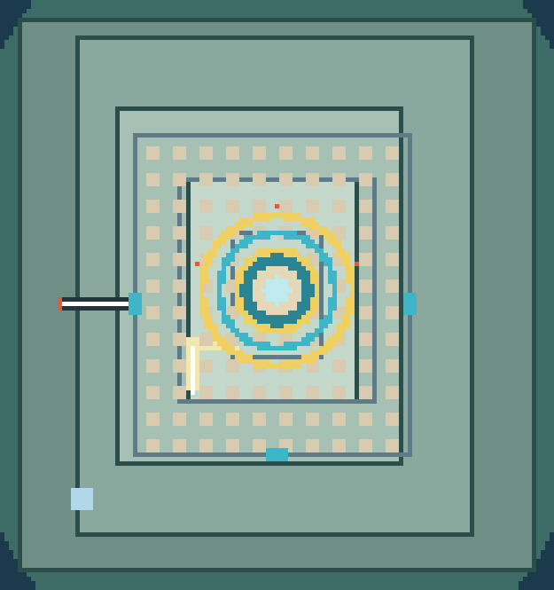
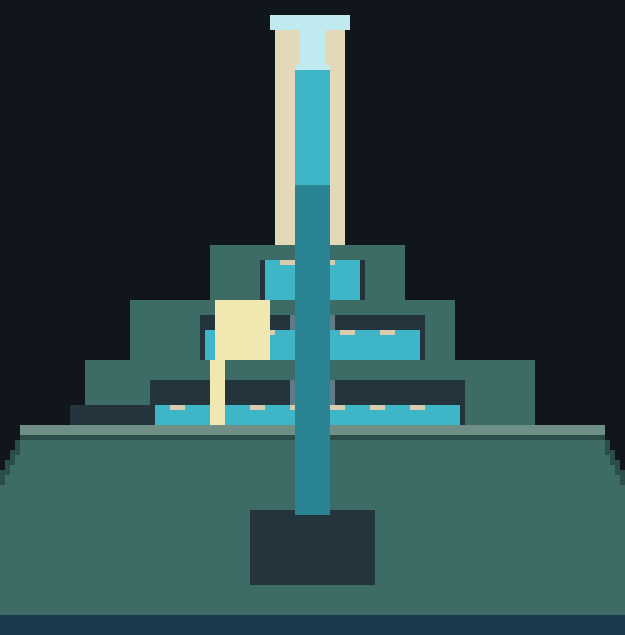
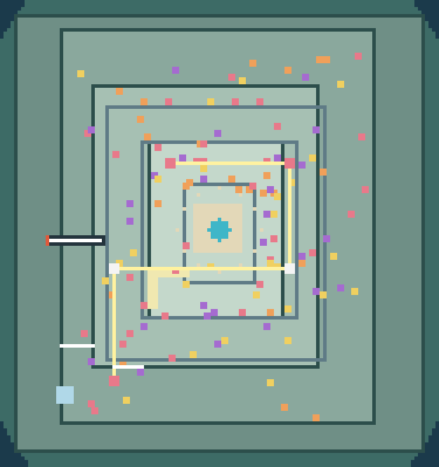
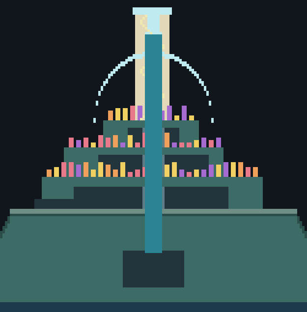
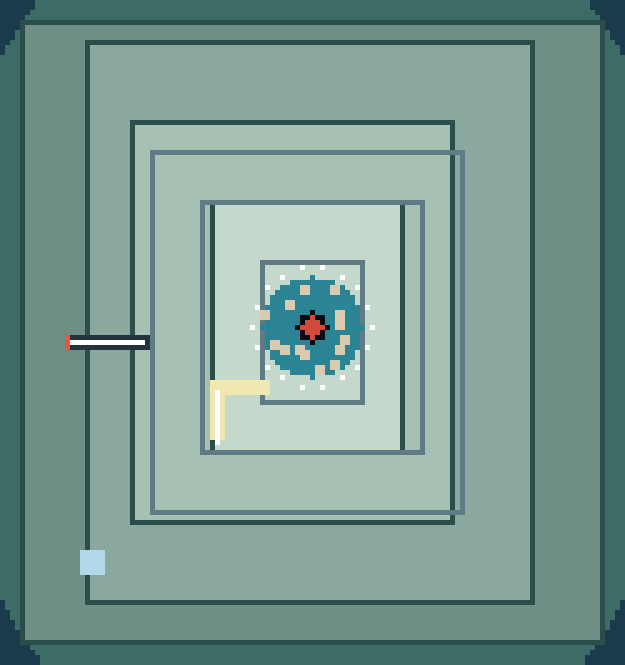
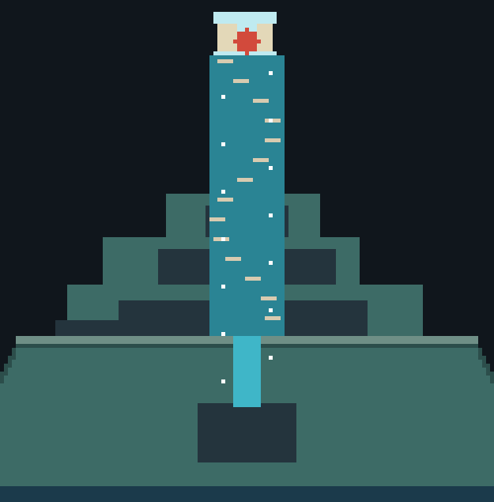

潮殻の背「上り」の作り直し
試遊の声: 「のぼっていくやつ、空いてる所の無駄でしょ。もっと壮大なものにして。」 分析と 3 案の詳細は docs/design/24_tide_climb_redesign.md。この画面は、その見取り図です (1 ブロック = 5 px のドット絵。上から見た図は北が上、横から見た図は x と高さ)。まだ作りません。
いまの姿
約 6.7 万予約の間 1〜3 の空気 (ブロック)。空っぽで封印
約 1 万T2〜T4 の地面 (マス)。壁で上れない
約 90月の窓の縦穴の高さ (ブロック)。ガラスの床で終わる
35 段浜から T1 への螺旋。何もない。戸は何も言わない

上から。四段の台地 (T1〜T4)、塔 (中央の砂色)、縦穴 (黒)、予約の間 1〜3 の枠、赤い戸と廊下、淡黄の階段、左下の水色が浜からの螺旋。

横から (z = -3)。広間 (下の箱) から塔のガラスの床まで、縦穴が一本通る。予約の間 3 つは暗い箱。
案 A 潮の塔 (昇る水の三層)
三つの層が運河の閘室のように、水位が上がると上の層へ運ばれる。 水門を開け、月の輪で出口を読み、水の柱で縦穴を昇って塔の頂の展望へ。
- 道のり
- 取水の間 (水門を開ける) → 月暦の間 (光る出口を読む) → 昇りの間 (留め具で水を保ち、縦穴を昇る) → 塔の展望 (景色・近道)
- 決断
- 水門の順、水位を保つか進むか、どの出口を選ぶか
- 進みの見せ方
- 月の輪が層ごとに灯る、水位の線、目的の板「第二層 水位 4/7」
- マルチ
- 留め具を踏む係と水に乗る係
- 広がり
- 今の箱の中 (頂の展望の部屋だけ掘る)
- 工数・資源
- 約 8 日・ブロック 1 (水門の輪)・モデルなし
- リスク
- 水の量 (床を閘室に区切る)、水位が上がる間の挟み込み、東の溜めと似て見える

上から。予約の間 1 に浮き板と三つの水門 (水色)、予約の間 2 に月の輪 (金・青) と赤い出口、中央に閘室と展望。

横から。三層の水位と浮き板、縦穴を昇る水の柱、頂のガラスの展望。
水・水門浮き板月の輪出口展望のガラス
案 B 冠の園 (月の庭と光の聖堂)
甲羅の上の台地を珊瑚の庭にし、頂の塔を光の聖堂にする。 真珠のレンズで月 (昼は日) の光を曲げ、三つの珊瑚の心に当てて花を咲かせると、塔が開く。頂から縦穴を滑り降りる近道つき。
- 道のり
- 根の洞 (予約の間 1〜3。光の真珠を集める) → 月の庭 1・2・3 (T2〜T4。台座に真珠を据えて光を曲げる) → 光の聖堂 (塔の螺旋・頂の展望) → 縦穴の滑降
- 決断
- 真珠をどの台座に据えるか、光を分けるか曲げるか、当てる順
- 進みの見せ方
- 珊瑚の心が咲くたびに塔の光る帯が伸びる、光の線が粒で見える、目的の板「月の庭 2/3」
- マルチ
- 台座を回す係と光の先を見る係
- 広がり
- 外へ広がる (T2〜T4 の地面、塔の中、聖堂の丸天井。海から見える塔の形が変わる)
- 工数・資源
- 約 9 日・品 1 (光の真珠)・ブロック 2 (台座・珊瑚の心)・外観
- リスク
- 光の謎が分かりにくくなる (今回の試遊の声と同じ)、建築が大きい (6〜8 万ブロック)

上から。台地の珊瑚の房、白い台座と黄色い光の道、桃色の珊瑚の心三つ、塔のまわりの弧の柱。

横から。台地の珊瑚、塔のまわりのガラスの丸天井、塔の中の螺旋の昇り、縦穴の滑降の水の柱。
珊瑚・珊瑚の心台座 (真珠のレンズ)光丸天井・展望近道の水の柱
案 C 息の間 (亀の肺)
三つの層と縦穴を一つの大空洞「肺」にして、水を湛えた浮かぶ皿を、泡に放り上げられて渡る。 螺旋の流れで高さが増し、山頂で名づきの番「真珠守り」と戦う。勝つと展望と近道が開く。
- 道のり
- 気道の入口 (回廊) → 肺の房 (皿と泡で昇る) → 肺の空 (滑空) → 山頂 (真珠守りの戦い) → 塔の展望・近道
- 決断
- どの皿を選ぶか、泡の周期を待つか進むか、呼び水で回りを反転させるか、戦いでの逃げ先
- 進みの見せ方
- 壁の三つの輪が高さごとに灯る、息の目盛り (高さ)、ボスバー
- マルチ
- 呼び水を触る係・先に昇る係、ボスは人数で増える
- 広がり
- 縦に広がる (縦穴の柱を壊して半径 9 の気室。外の形は同じ)
- 工数・資源
- 約 10 日 (気室 4 日 + ボス 6 日)・ブロック 2 (皿・呼び水)・ボスのモデル 1
- リスク
- 泡の放り上げが安定するか (最初の 1 日で試作)、流れの読みにくさ、空中戦の見やすさ
推薦: 案 C。縦穴の約束に正面から答え、分析のつなぎが空・山場がないを直接直し、気室だけで先に遊べる。

上から。半径 9 の気室 (青)、らせんに並ぶ皿 (砂色)、流れの矢印 (白)、中心の赤が山頂の番。

横から。縦穴が大空洞になり、皿が螺旋に高さを変え、頂のガラスの床の上に山頂の番。
気室水を湛えた皿流れ・泡山頂の番塔の展望
比べる
| A 潮の塔 | B 冠の園 | C 息の間 |
|---|
| 見せ場 | 昇る水と海の景色 | 光が花を咲かせる聖堂 | 縦の大空洞と山頂の戦い |
|---|
| 戦い | なし | なし | 名づき 1 体 |
|---|
| 広がり | 今の箱の中 | 外へ (塔の形が変わる) | 縦へ (外は同じ) |
|---|
| 工数 | 約 8 日 | 約 9 日 | 約 10 日 |
|---|
| 最大のリスク | 水の量・挟み込み | 光の謎の分かりにくさ | 泡の安定・戦いの見やすさ |
|---|
どれで進めますか
読み込み中…